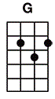
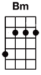
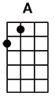

#16 Come together




riff x 4
(Verse 1)
[Dm] Here come old flat top, he come grooving up slowly
He got Joo Joo eyeball, he one holy roller
He got [A] hair down to his knee
[G/][stop] Got to be a joker, he just do what he please
riff x 4
(Verse 2)
[Dm] He wear no shoe shine, he got toe jam football
He got monkey finger, he shoot coca cola
He say, [A] "I know you, you know me."
[G/][stop] One thing I can tell you is you got to be free
(Chorus)
Come [Bm] together, right [G] now, [A/] over me
riff x 4
(Verse 3)
[Dm] He bag production, he got walrus gumboot
He got Ono sideboard, he one spinal cracker
He got [A] feet down below his knee
[G/][stop] Hold you in his armchair, you can feel his disease
(Chorus)
Come [Bm] together, right [G] now, [A/] over me
(Instrumental 1)
riff x 2
[Dm][Dm][Dm][Dm] rhythm -I-I-I-I
[A][A][A][A] with guitar solo
riff x 2
(Verse 4)
[Dm] He roller coaster, he got early warning
He got muddy water, he one mojo filter
He say, [A] "One and one and one is three."
[G/][stop] Got to be good looking 'cause he so hard to see
(Chorus)
Come [Bm] together, right [G] now, [A/] over me
(Instrumental 2)
riff x 4
[Dm][Dm][Dm][Dm] rhythm -I-I-I-I
[Dm][Dm][Dm][Dm]
[Dm][Dm][Dm][Dm] or to fade with improvising, rhythm -I-I-I-I